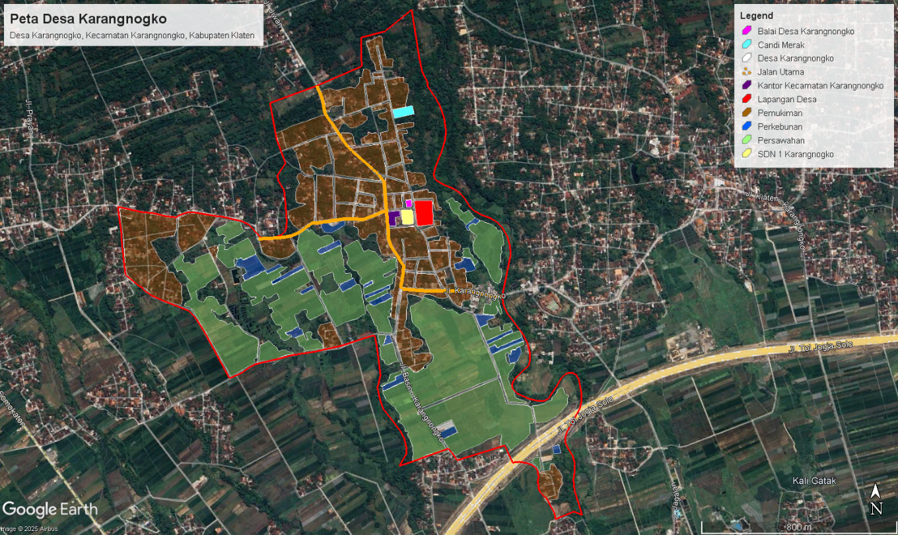
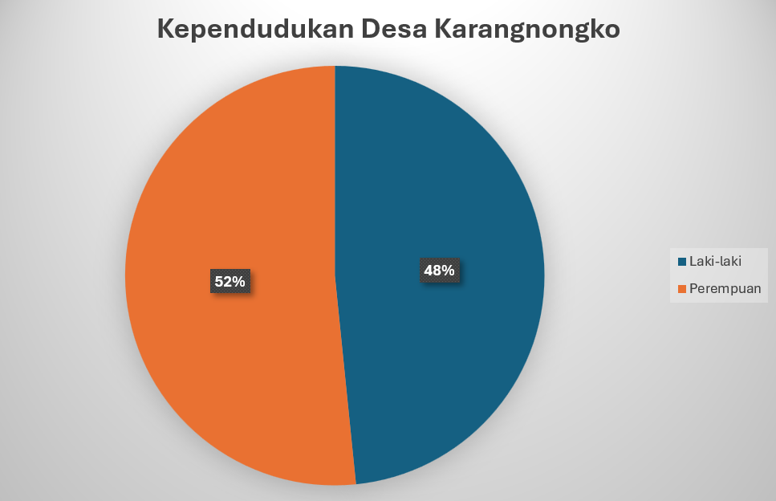
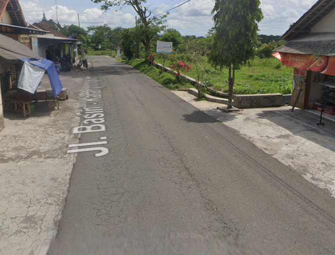
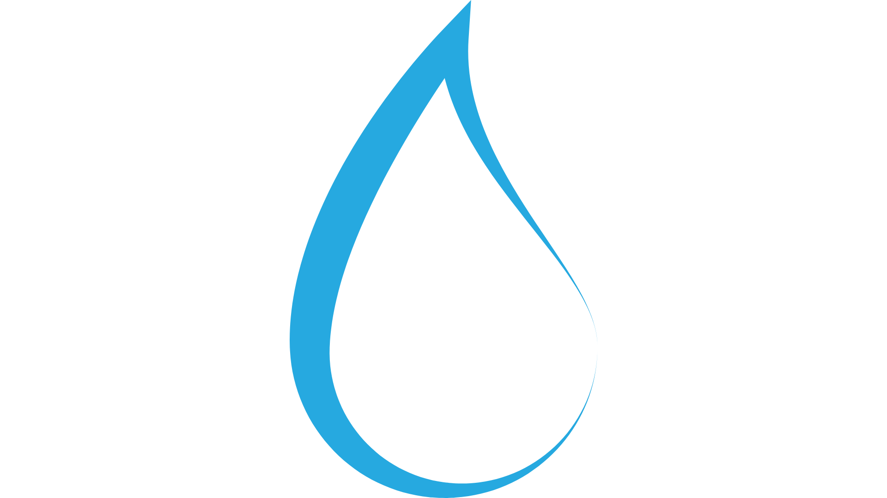
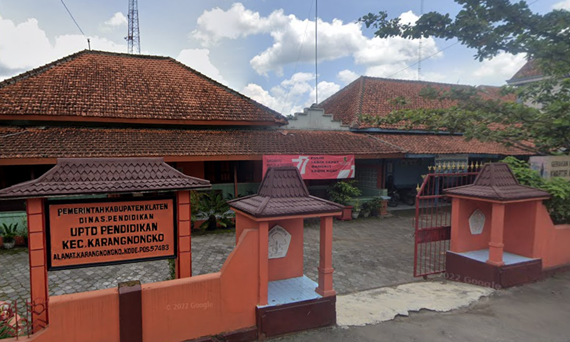
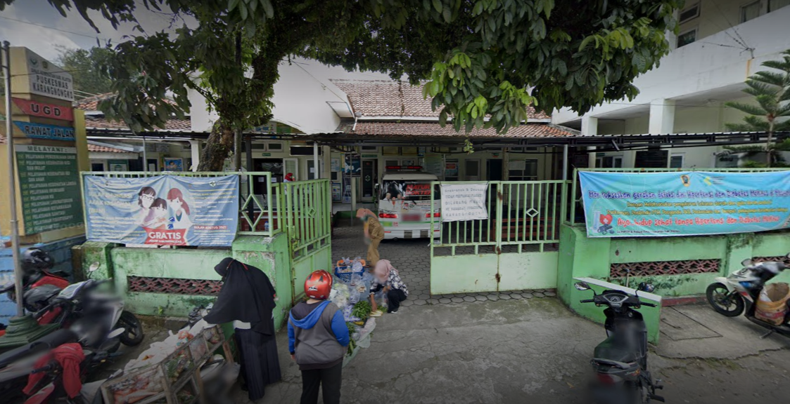
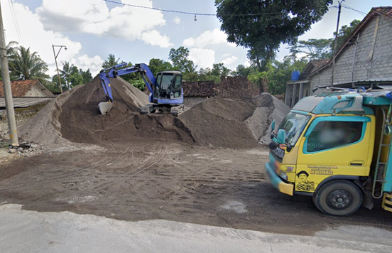
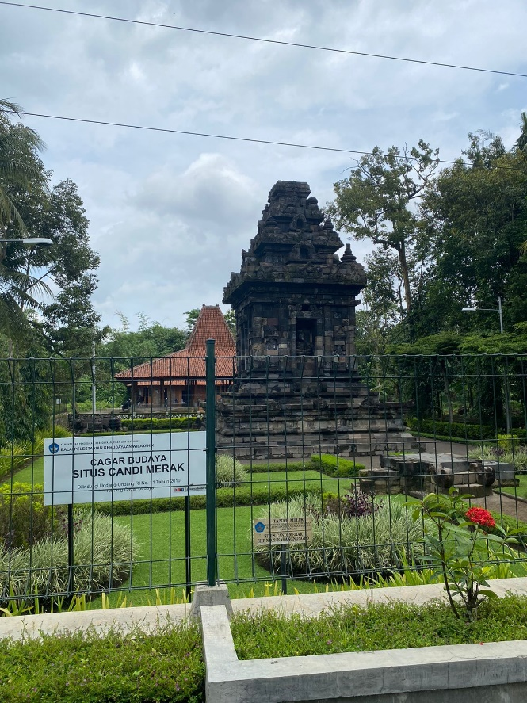
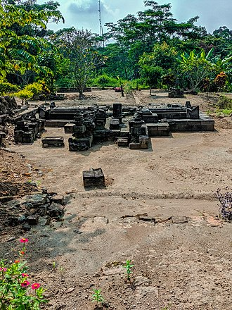

Silakan menghubungi kami melalui form di bawah ini:
Wilayah
Desa Karangnongko

Desa Karangnongko merupakan salah satu desa di
Kecamatan Karangnongko, Kabupaten Klaten, Jawa Tengah dengan luas
wilayah 134 ha. Sebelah utara berbatasan dengan Desa Kanoman
, sebelah selatan berbatasan dengan Desa Malangjiwan,
sebelah barat berbatasan dengan Desa Jetis, dan sebelah
timur berbatasan dengan Desa Jagalan.
Desa Karangnongko sendiri memiliki
kondisi geografis dengan ketinggian tanah dari permukaan laut sebesar 250M. dengan curah hujan 1877 mm/th, dengan topografi dataran rendah dan suhu udara rata-rata 26 derajat celcius.
Lokasi Desa Karangnongko terletak di wilayah Kabupaten Klaten yang merupakan bagian daripada wilayah Kecamatan Karangnongko . Desa Karangnongko berjarak 0.2 Km dari pusat pemerintahan Kecamatan, serta berjarak 7.5 Km dari ibukota Kabupaten/kota Klaten. Desa Karangnongko sendiri berjarak 100 Km dari ibukota Propinsi Jawa Tengah, serta berjarak 550 Km dari ibukota Negara.
Penduduk
Desa Karangnongko

Desa Karangnongko memiliki total kependudukan sebanyak 2.110 orang, dengan jumlah Laki-laki 1.021 orang dan jumlah Perempuan 1.089 orang, dengan jumlah Kepala Keluarga sebanyak 776 orang dan sebagai WNI.
Penduduk Desa Karangnongko terbanyak yaitu rentang usia 19-keatas, penduduk Desa Karangnongko pada rentang usia 19 tahun – keatas berjumlah 1175 orang, adapun rentang usia 0-3 tahun berjumlah 106 orang, lalu rentang usia 4-6 tahun di Desa Karangnongko yaitu berjumlah 111 orang, untuk rentang usia 7-12 tahun pada Desa Karangnongko berjumlah 134 orang, untuk masyarakat Desa Karangnongko rentang usia 13-15 tahun berjumlah 131 orang, dan yang terbanyak kedua setelah rentang usia 19-keatas yaitu rentang usia 16-18 tahun yaitu berjumlah 136 orang.
Terdapat 12 RW pada Desa Karangnongko, dan 24 RT. Mata pencaharian warga Desa Karangnongko bermacam-macam, dapat dilihat sebagai berikut.
Pertukangan
71 orang
Petani
32 orang
Buruh Harian Lepas
1175 orang
Pensiunan
71 orang
Wiraswasta
74 orang
Karyawan
129 orang
Visi dan Misi
Desa Pagar Besi
VISI : Terwujudnya Desa Karangnongko yang Maju,
Mandiri, dan Berdaya Saing
MISI : 1. Mewujudkan kualitas sumber daya manusia
yang bertaqwa, cerdas, mandiri, dan berbudaya.
2. Mewujudkan pemerintah yang bersih dan
tata kelola pemerintahan yang baik, demokratis, dan
bertanggung jawab. 3. Memajukan ekonomi
daerah yang berbasis pada agropolitan yang berdaya saing dan
berkelanjutan. 4. Meningkatkan kapasitas
desa melalui pemenuhan hak dan peningkatan sumber daya
manusia yang berbasis kearifan lokal.
5. Meningkatkan kualitas dan kuantitas
infrastruktur berbasis mitigasi bencana.
Infrastruktur Jalan
Desa Karangnongko

No
Jenis Jalan
Buah
Total Panjang (Km)
1
Dusun/Lingkungan
11
11
2
Desa
17
4
3
Ekonomi
-
-
4
Protokol
1
2,5
5
Kabupaten
4
5
6
Propinsi
-
-
Potensi: o Tersedianya jalan penghubung antar dusun dan desa sekitar yang cukup memadai.
o Lokasi desa strategis, mendukung akses ke pasar lokal, sekolah, dan pusat pemerintahan kecamatan.
Peluang Pengembangan: o Peningkatan kualitas jalan dengan aspal atau betonisasi untuk kelancaran transportasi barang dan orang.
o Penyediaan fasilitas transportasi umum untuk memudahkan mobilitas masyarakat.
Tantangan: o Perawatan jalan desa yang terbatas akibat kendala anggaran.
o Erosi dan kerusakan jalan akibat curah hujan tinggi.
Infrastruktur Air Bersih
Desa Karangnongko

Potensi: o Sumber mata air lokal yang dapat dimanfaatkan sebagai penyedia air bersih.
o Kesadaran masyarakat akan pentingnya sanitasi yang mulai meningkat.
Peluang Pengembangan: o Pembangunan sistem distribusi air bersih seperti jaringan pipa.
o Pembangunan fasilitas sanitasi seperti MCK komunal dan IPAL (Instalasi Pengolahan Air Limbah).
Tantangan: o Distribusi air yang belum merata ke seluruh wilayah desa.
o Pengelolaan sanitasi yang masih bergantung pada pola tradisional.
Infrastruktur Pendidikan
Desa Karangnongko

No
Jenis Pendidikan
Negeri
Swasta
1
Taman Kanak-kanak
2
1
2
Sekolah Dasar/Madrasah
2
1
3
SMP
-
-
4
SMA
-
-
5
Perguruan Tinggi
Potensi: o Tersedianya sekolah dasar dan menengah pertama di desa atau sekitar.
o Dukungan masyarakat terhadap pendidikan anak-anak.
Peluang Pengembangan: o Peningkatan fasilitas sekolah seperti laboratorium, perpustakaan, dan ruang kelas layak.
o Pelatihan keterampilan untuk masyarakat dewasa.
Tantangan: o Keterbatasan fasilitas pendidikan lanjutan (SMA/SMK) di dalam desa.
o Kurangnya akses teknologi pendidikan seperti internet dan perangkat IT
Infrastruktur Kesehatan
Desa Karangnongko

No
Jenis Fasilitas Kesehatan
Jumlah
1
Rumah Sakit Umum Pemerintah
-
2
Rumah Sakit Swasta
-
3
Rumah Sakit Bersalin
-
4
Poliklinik/Balai Masyarakat
4
5
Laboratorium
-
6
Apotek/Depo Obat
1
Jumlah
5
Potensi: o Adanya Puskesmas Pembantu atau Posyandu yang berfungsi sebagai pusat pelayanan kesehatan dasar.
Peluang Pengembangan: o Peningkatan fasilitas di Puskesmas atau Posyandu seperti alat kesehatan modern dan tenaga medis tambahan.
o Program penyuluhan kesehatan masyarakat secara berkala.
Tantangan: o Jarak ke fasilitas kesehatan lanjutan masih cukup jauh.
o Minimnya tenaga kesehatan yang tinggal di desa.
Pendukung Ekonomi
Desa Karangnongko

Potensi: o Adanya pasar tradisional sebagai pusat aktivitas ekonomi masyarakat.
o Produk lokal seperti hasil pertanian yang potensial untuk dikembangkan.
Peluang Pengembangan: o Pembangunan pasar modern atau pusat UMKM untuk mendukung pemasaran produk lokal.
o Penyediaan gudang penyimpanan hasil pertanian.
Tantangan: o Keterbatasan fasilitas pendukung logistik seperti cold storage atau alat transportasi.
Obyek Wisata
Desa Karangnongko

Desa Karangnongko dengan dengan gunung merapi dan memiliki banyak panorama/ pemandangan yang indah. Dari banyak lokasi tersebut telah dikembangkan Kedepan akan direncanakan dikembangkan wisata. Desa Karangnongko memiliki tempat wisata seperti Candi Merak dan Candi Karangnongko.
Candi Merak sendiri biasanya digunaakan untuk upacara keagaaman sembayang tahunan untuk yang beragama Hindu dan tidak jarang juga biasanya dikunjungi oleh turis maupun turis lokal hingga luar negri, Bangunan Candi Merak ini masih diurus dengan apik dan asri sehingga banyak orang yang berkunjung untuk mengabadikan momen.

Candi Karangnongko sebuah candi yang terletak di tengah areal persawahan di pusat Kecamatan Karangnongko, Kabupaten Klaten.
Reruntuhan candi ini ditemukan pada tahun 1970-an. Bangunan ini hanya tinggal fondasi, kira-kira berukuran 3x3 m² dengan tinggi + 0,5 m.
Tidak jauh dari candi ini (kira-kira lima meter) terdapat mata air yang jernih, dan di dasar mata air ini terdapat susunan batu-batu yang menyerupai fondasi kolam zaman dulu.